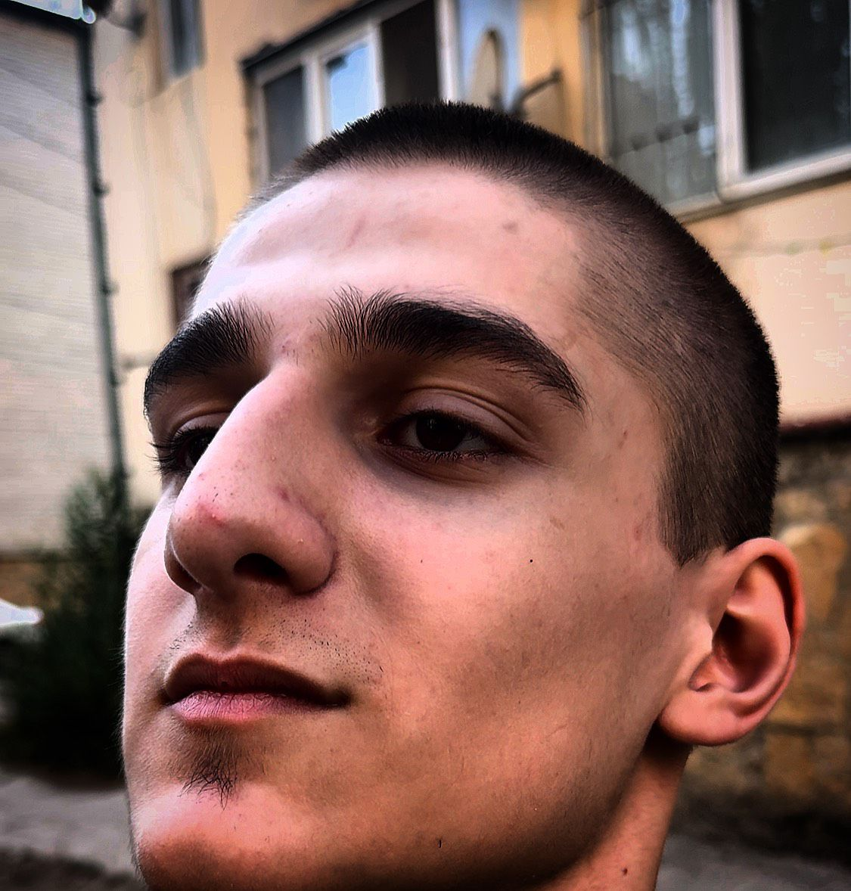

О Раибе
Раиб – это человек, который достиг всего, чего мог. Для него не существует слова "невозможно". Я могу со 100% уверенностью сказать, что вы полюбому где-то его видели. Но не смотря на это, он был пятикратным победителем в чемпионате пердежа, с ним вышел на бой десятикратный призер балобольства и обмана Мелкий Шома Цыганов, но не смотря на такого жесткого и опасного противника он вышел победителем, тем самым оправдав свое звание "дебила 2024". Остальная информация размещена на сайте - воздухраиба.ру
Биография Раиба
Имя: Раиб
Дата рождения: Неизвестно (возможно, вымышленный или художественный персонаж)
Место рождения: Неизвестно
Образование: Неизвестно
Карьера и достижения:
Раиб — личность, о которой мало информации, что может указывать на его вымышленный характер или отсутствие значительных исторических данных. Возможно, Раиб является героем литературного произведения, фильма или другой формы искусства, где его история могла бы быть раскрыта более подробно. Если вы имеете в виду конкретного человека с именем Раиб, пожалуйста, предоставьте больше информации о его жизни, чтобы я мог создать более точную и интересную биографию.
Личные качества:
В зависимости от контекста, Раиб может обладать различными чертами характера. Это может быть творческая натура, лидер, исследователь или человек, стремящийся к знаниям. Его личные качества могут зависеть от его окружения и жизненных обстоятельств.